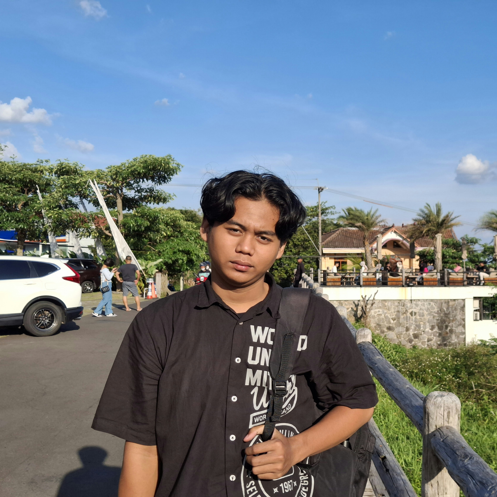
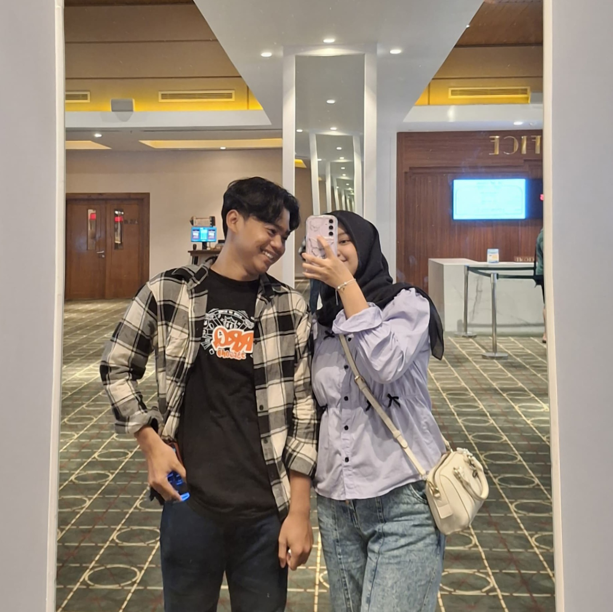

Profile Saya
Saya Rizal, seorang mahasiswa berusia 19 tahun yang saat ini sedang menempuh semester ketiga di bangku kuliah. Di usia ini, saya sedang berada dalam fase belajar banyak hal—bukan hanya soal akademik, tapi juga tentang kehidupan, relasi, tanggung jawab, dan arah masa depan saya. Sebagai mahasiswa, saya mulai terbiasa dengan jadwal kuliah yang kadang padat, tugas-tugas yang menumpuk, dan tantangan bekerja dalam tim. Tapi justru di sanalah saya banyak belajar—tentang cara berpikir kritis, beradaptasi dengan lingkungan baru, dan mengatur waktu agar semua bisa seimbang. Saya bukan orang yang sempurna, tapi saya terus berusaha berkembang. Kadang masih bingung menentukan arah hidup, tapi saya percaya proses pencarian itu penting. Saya mulai mencoba hal-hal baru—ikut organisasi, cari pengalaman di luar kelas, dan membuka diri pada berbagai kesempatan. Bagi saya, usia 19 adalah waktu yang tepat untuk tumbuh. Saya sedang membangun pondasi, mengenal lebih dalam siapa diri saya, dan perlahan membentuk masa depan yang saya inginkan. Hidup mungkin belum sepenuhnya pasti, tapi saya yakin langkah kecil yang saya ambil hari ini akan membawa saya ke tempat yang lebih baik nanti
Informasi Detail di sini
Kembali ke atas
Pendidikan
Saya Rizal, mahasiswa berusia 19 tahun yang saat ini sedang menempuh semester ketiga di perguruan tinggi. Perjalanan pendidikan saya dimulai dari SDN Purwosari 02 Semarang, tempat saya pertama kali mengenal dunia belajar secara formal dan membentuk dasar kedisiplinan serta rasa ingin tahu. Setelah itu, saya melanjutkan ke SMPN 36 Semarang, di mana saya mulai mengembangkan kemampuan sosial, bekerja dalam tim, serta mulai menunjukkan minat terhadap pelajaran dan kegiatan di luar kelas. Jenjang berikutnya saya lalui di SMAN 3 Semarang, sebuah lingkungan yang sangat mendorong saya untuk berpikir lebih kritis dan mempersiapkan masa depan secara lebih serius. Di sana, saya dihadapkan pada tantangan akademik yang lebih kompleks serta kesempatan untuk terlibat dalam kegiatan organisasi dan pengembangan diri. Kini, sebagai mahasiswa, saya mulai terbiasa dengan dinamika perkuliahan—mulai dari mengatur waktu, beradaptasi dengan lingkungan baru, hingga berusaha aktif dalam kegiatan yang mendukung pertumbuhan pribadi dan profesional saya. Semua pengalaman pendidikan yang telah saya lalui memberikan fondasi kuat bagi saya untuk terus berkembang, baik secara intelektual maupun karakter.
Informasi Detail di sini
Kembali ke atas
Karir Saya
Saya Rizal, mahasiswa aktif jurusan Sistem Informasi yang saat ini sedang menempuh semester ketiga. Dengan usia 19 tahun dan latar belakang pendidikan di SDN Purwosari 02, SMPN 36, dan SMAN 3 Semarang, saya tumbuh dalam lingkungan belajar yang menekankan kedisiplinan dan konsistensi, yang membentuk karakter saya sebagai pribadi yang tenang, sabar, dan tekun. Minat saya saat ini tertuju pada bidang data analyst, terutama dalam bagaimana data dapat digunakan untuk menghasilkan wawasan yang berguna dan pengambilan keputusan yang lebih baik. Saya tertarik pada proses mengumpulkan, membersihkan, menganalisis, dan memvisualisasikan data, serta terus mengembangkan kemampuan teknis saya dalam tools seperti Excel, SQL, dan dasar-dasar Python atau data visualization tools. Meskipun saya tidak aktif dalam organisasi kampus, saya fokus pada pengembangan diri secara mandiri melalui pembelajaran online, eksplorasi proyek kecil, dan memperdalam pemahaman terhadap konsep-konsep data dan sistem informasi. Saya percaya bahwa kelebihan saya ada pada ketelitian, kesabaran, dan kemampuan untuk bekerja secara sistematis, yang sangat dibutuhkan dalam dunia data. Ke depan, saya bercita-cita untuk berkarier sebagai Data Analyst atau berperan dalam tim analitik yang membantu perusahaan membuat keputusan berbasis data. Saya ingin mengembangkan diri melalui pengalaman magang, kursus, serta proyek-proyek nyata yang relevan dengan dunia data.
Kembali ke atas
Galeri
Di sini ada galeri yang terdapat foto saya bersama dengan support system saya selama saya kuliiah disini, saya mengucapkan banyak terimakasih ke kamu. sedikit apresiasi ku yaaa
| MySelf | MyLove |
|---|---|
|  |  |
Kembali ke atas
Hobi
- Belajar
- Membaca
- Bersepeda
Keahlian
- Web Development
- Membaca
- Bersepeda